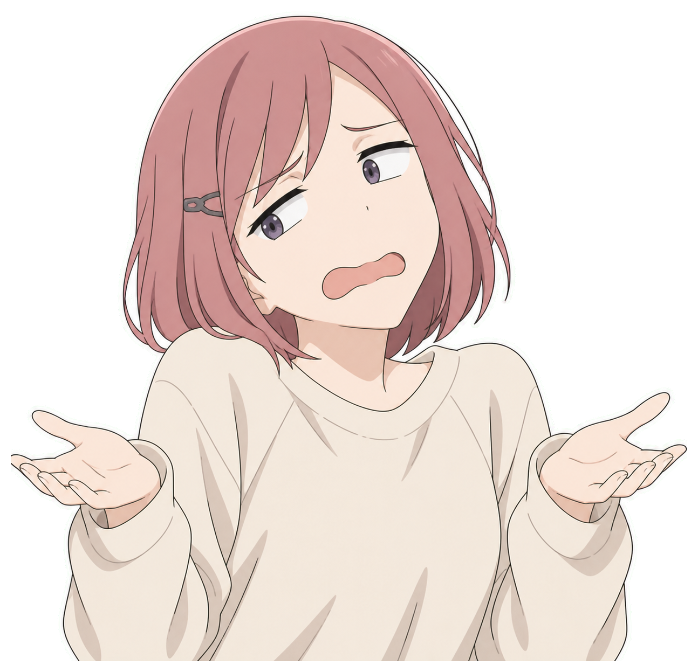
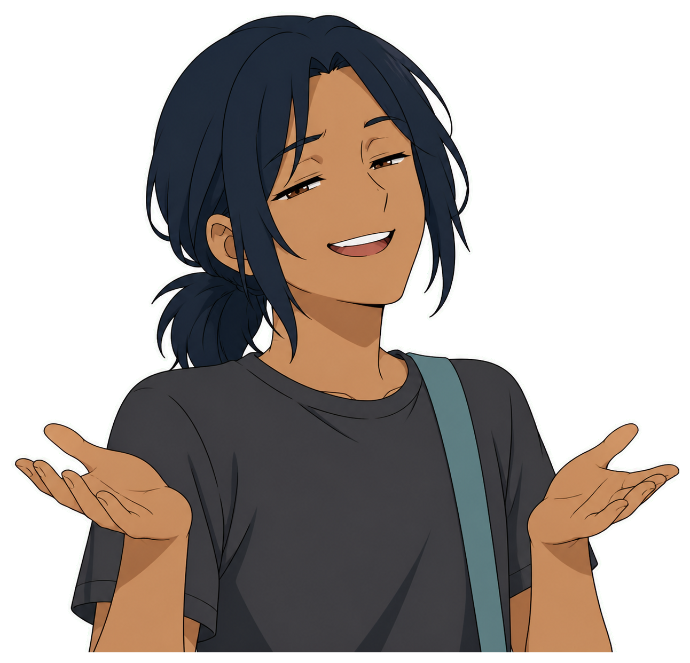
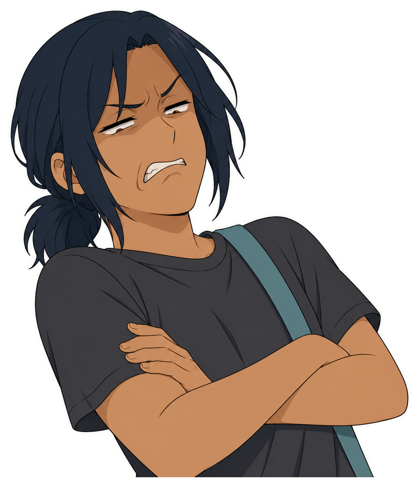
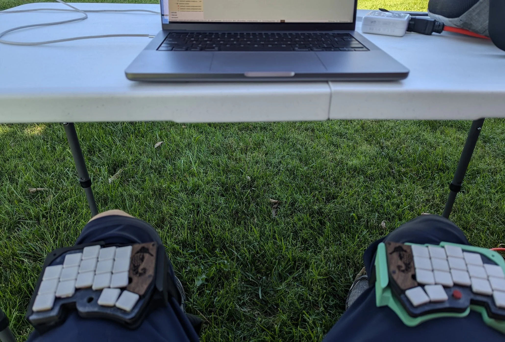
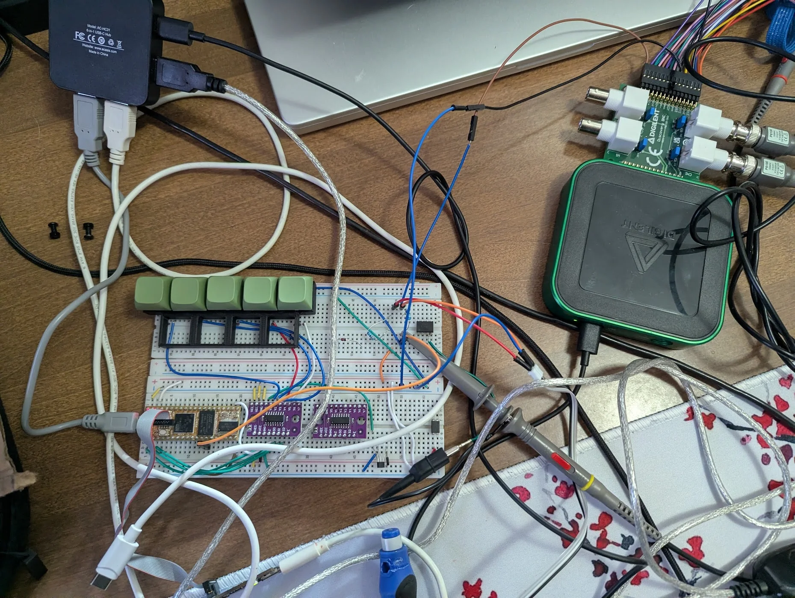
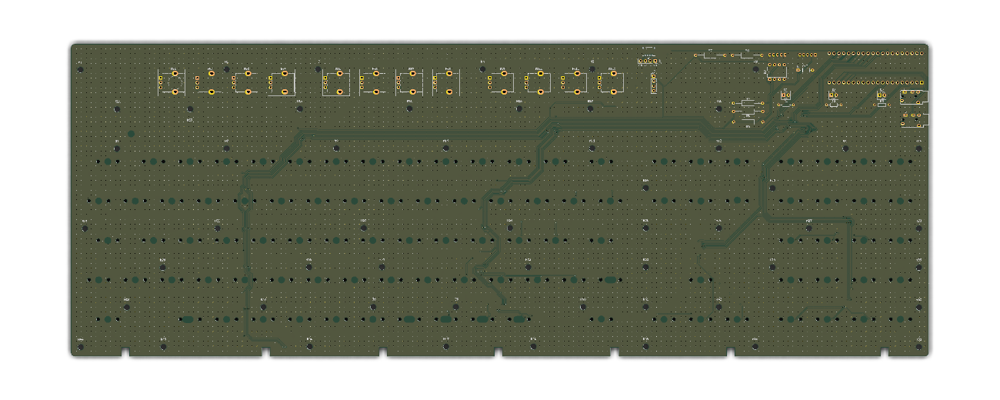
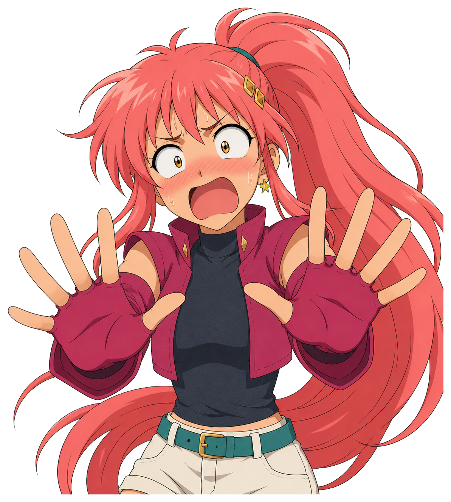
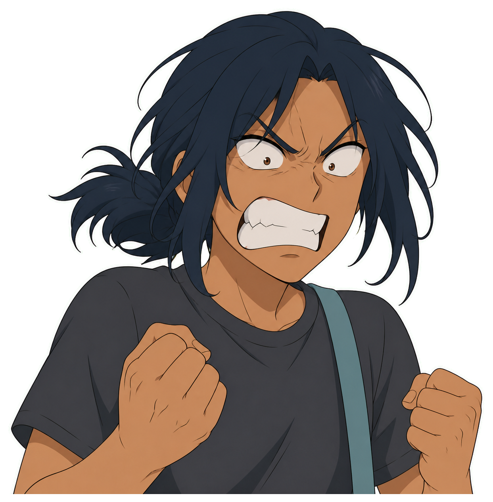
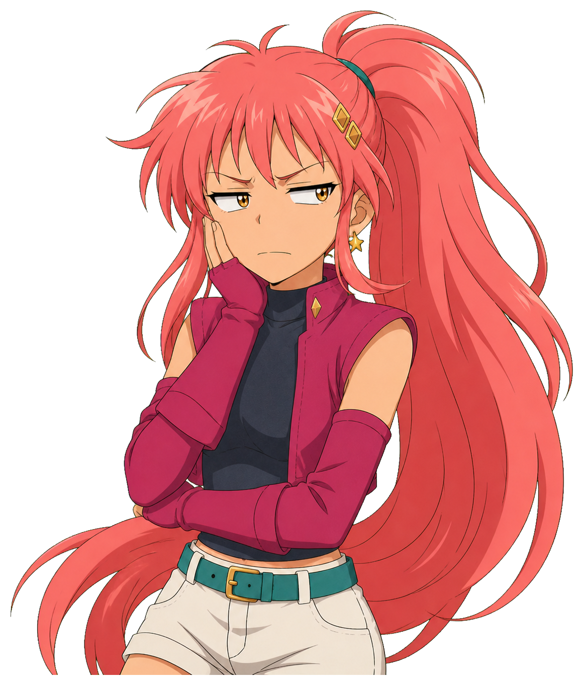
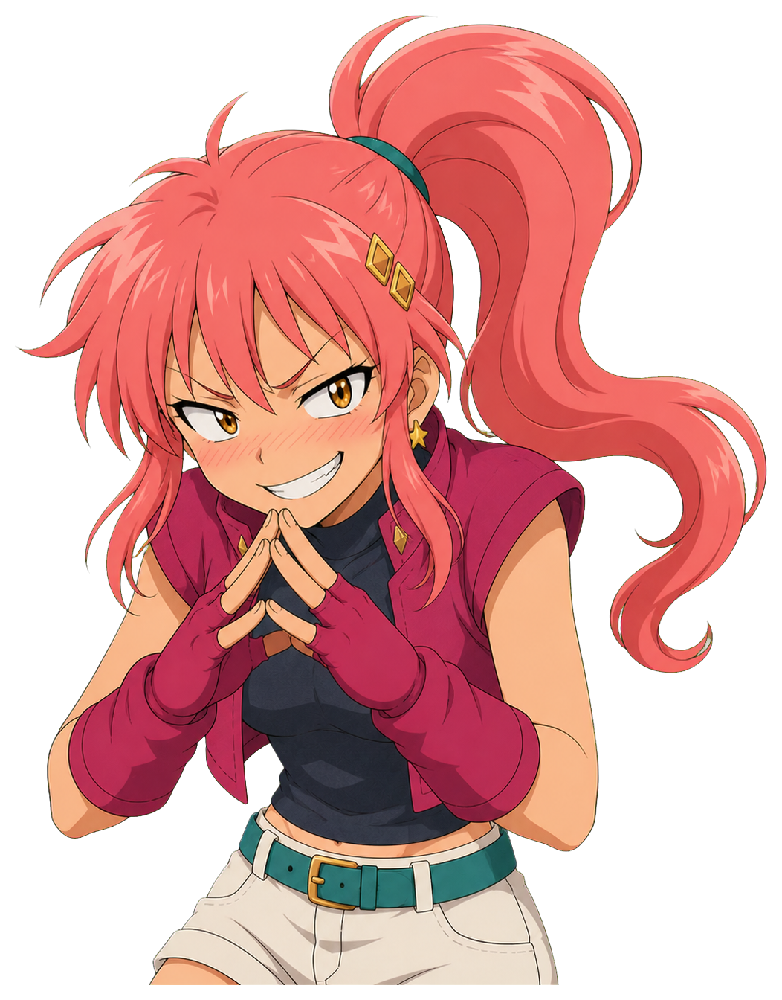

Establishingintroduce a place, object, or chapter


The workshopSaturday · too late
Begin wide. Establish the artifact before explaining it.
as-shot--establishing · actor--lead · prop--lead
Two-characterdialogue, agreement, or disagreement


なるほど。The geometry stays put.
as-shot--two · actor--lead · actor--support
Close-uprealization, confession, or technical thesis
as-shot--closeup · actor--lead · fx--rings
Over the shoulderinspect hardware, code, or a clue

EvidenceFollow the eyeline
as-shot--over-shoulder · foreground observer · prop--lead
Split screencontrast, rivalry, or two valid perspectives

Architecture!versus · reality
as-shot--split · lead · support
Montageiteration, elapsed time, debugging, or research

Prototype

Proof

Revision
as-shot--montage · as-panel × 3
Reactionpunch line, panic, victory, or defeat
as-shot--reaction · fx--fury · mb--shout
Cliffhangerend an arc on an unresolved question

But can it survive the demo?
as-shot--cliffhanger · actor--silhouette · as-cut-in
Insertmake one object, control, or clue undeniable
Cut to evidence. Label only what the audience should inspect.
as-shot--insert · prop--lead · actor--support
Extreme close-upemotional peak, tiny tell, or one decisive detail

It routed on the first try.
as-shot--extreme-closeup · actor--lead
Low angleauthority, victory, threat, or heroic reveal
as-shot--low-angle · actor--lead
High anglevulnerability, isolation, defeat, or scale

There are still 104 keys.
as-shot--high-angle · actor--lead · negative space
Dutch angleinstability, panic, surprise, or rules breaking

The ground plane is gone!
as-shot--dutch · actor--lead · prop--lead
Three-characterdecision, triangle, team beat, or social pressure


Center the character who owns the decision—not necessarily the speaker.
as-shot--three · lead · support · third
Foreground framePOV, surveillance, tension, or directed attention


The foreground shape tells us whose viewpoint controls the shot.
as-shot--foreground-frame · actor--frame · lead
Identity revealentrance, new stakeholder, hidden system, or transformation
New challengerreveal on click
as-shot--reveal · actor--lead · actor--silhouette